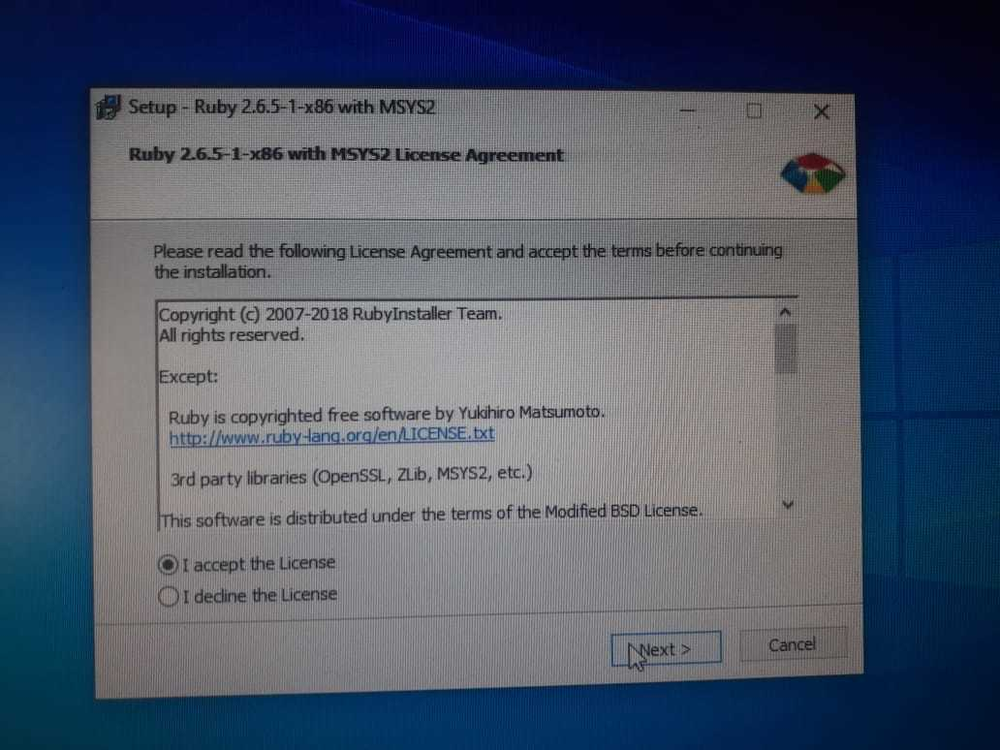
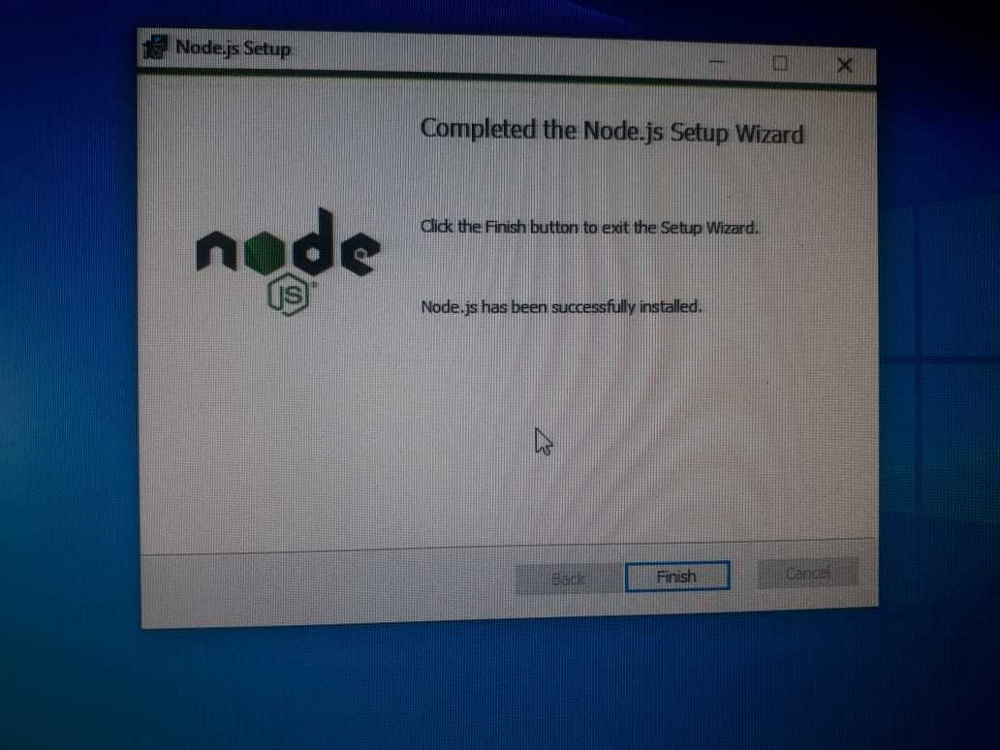

Seminario de Solución de Problemas de Sistemas Operativos de Red
D05
ACTIVIDAD 6

Instalar ruby on rails, ionic y desarrollar una aplicación básica en linux y windows.
Introducción
Instación en Windows 10
Instalación en Lubuntu
Introducción
Ruby on Rails Es un framework de programación creado por David Heinemeier Hansson, quien le dio el nombre de Ruby on Rails, que usualmente es llamando simplemente Rails.
Rails está enfocado en crear sitios web y combina Ruby con HTML, CSS y JavaScript para crear aplicaciones web que corren en un servidor web. Dado lo anterior, es considerado server-side o Back-end.
Ruby on Rails más que un framework es el proyecto central de una comunidad gigante que produce de manera constante librerías para simplificar las tareas de crear complejas aplicaciones web.
Para descargarlo has click
aquí
Por otra parte Node.js es un entorno JavaScript de lado de servidor que utiliza un modelo asíncrono y dirigido por eventos.
Para descargarlo has click
aquí
Yarn es un administrador de dependencias relativamente nuevo, es open source y fue creado por miembros de Facebook y Google, su principal característica es la rápidez. Para descargarlo has click aquí
Por último Git es una herramienta que realiza una función del control de versiones de código de forma distribuida Para descargarlo has click aquí
El programa realizado es sencillo ya que solo será una variante del típico "Hola Mundo".
Instalación en Windows 10
Una vez descargado el instalador lo primero que tenemos que hacer es aceptar los términos y condiciones.
Basta con darle en "next" a todo para dejar la instalación por defecto.
Cuando lleguemos a esta parte presionamos el boton de instalar.
Esperamos unos minutos a que la instalación se complete.
Una vez instalado le damos en terminar.
Abrimos la consola de Ruby para seguir la instalación.
Damos Enter y esperamos a que se instalen los paquetes.
Este proceso puede tardar algunos minutos según el equipo.
En mi caso después de aproximadamante 7 minutos se habrán instalado las gemas. Ahora utilizaremos el comando "gem install sqlite3" y esperaremos a la instalación.
Ahora instalaremos Node Js el cual es necesario para poder trabajar con Ruby on rails, para esto abriremos el isntalador antes descargado y daremos "Next".
Damos en instalar otorgando permisos de administrador.
Aceptamos los términos y condiciones y continuamos con la instalción.
La instalación no demorará mucho tardando en mi equipo alrededor de 2 minutos.
Le damos en terminar a la instalación.
Ahora instalaremos Yarn el cual es muy sencillo solo basta con darle en "Next" a todo.
La instalación se hará casi al instante.
Por último instalaremos Git, para ello tenemos que aceptar los términos y condiciones.
Seleccionamos las opciones marcadas en la imagen.
Ahora elegiremos las siguientes opciones.

Se comenzará la instalación la cual durará algunos minutos.
De preferencia una vez instalado todo reiniciamos el equipo para que se efectuen todos los cambios. Una vez reiniciado abrimos la términal de Ruby, nos vamos a nuestra carpeta y creamos un proyecto con el comando "rails new NombreDelProyecto"
Corremos el servidor con el comando "rails server", para que funcione debemos de estar en la carpeta del proyecto.
Aquí se muestra Ruby on Rails corriendo y en funcionamiento.
Para crear una vista usamos el comando "rails g controller NombreDeLaVista index"
Agregamos la ruta a nuestro archivo de routes.
Escribimos lo que deseemos mostrar en la vista.
Corremos el server y abrimos el "localhost" en el puerto indicado para ver la vista. Y con eso términamos el tutorial de Windows.
Instalar en Lubuntu
Parainstalar en Lubunto utilizamos el comando "sudo apt-get install ruby-dev".
Esperamos unos minutos a que termine la instalación.
Ahora instalaremos rails con el comando "sudo gem install rails".
Esperamos a que la instalación termine.
Esto puede llevar algunos minutos ya que instalá 41 gemas.
Ahora utilizaremos el comando "sudo apt-get install -y sqlite3 libsqlite3-dev".
Ya que sqlite3 este instalado instalaremos Node Js con el comando "sudo apt-get install nodejs".
En mi caso esta instalación tomo bastante tiempo, pero una vez hecho esto podremos usar Ruby on Rails sin problemas.